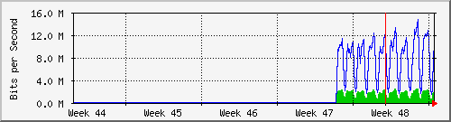

Traffic Analysis for 2 -- server25
| System: | server25 in Unknown (edit /etc/snmp/snmpd.conf) |
| Maintainer: | Root <root@localhost> (configure /etc/snmp/snmp.local.conf) |
| Description: | eth0 |
| ifType: | ethernetCsmacd (6) |
| ifName: | |
| Max Speed: | 1000.0 Mbits/s |
The statistics were last updated Monday, 5 December 2011 at 15:37,
at which time 'server25' had been up for 9 days, 4:20:05.
`Daily' Graph (5 Minute Average\)
|
Max |
Average |
Current |
| In |
2535.7 kb/s (0.3%) |
1667.3 kb/s (0.2%) |
1852.8 kb/s (0.2%) |
| Out |
14.3 Mb/s (1.4%) |
8396.2 kb/s (0.8%) |
9465.6 kb/s (0.9%) |
`Weekly' Graph (30 Minute Average\)
|
Max |
Average |
Current |
| In |
2667.0 kb/s (0.3%) |
1619.5 kb/s (0.2%) |
1805.9 kb/s (0.2%) |
| Out |
15.8 Mb/s (1.6%) |
7997.7 kb/s (0.8%) |
10.4 Mb/s (1.0%) |
`Monthly' Graph (2 Hour Average\)

|
Max |
Average |
Current |
| In |
2485.6 kb/s (0.2%) |
1622.9 kb/s (0.2%) |
1900.3 kb/s (0.2%) |
| Out |
14.6 Mb/s (1.5%) |
7905.5 kb/s (0.8%) |
9729.3 kb/s (1.0%) |
`Yearly' Graph (1 Day Average\)
|
Max |
Average |
Current |
| In |
1681.9 kb/s (0.2%) |
1604.4 kb/s (0.2%) |
1677.3 kb/s (0.2%) |
| Out |
8731.1 kb/s (0.9%) |
7810.0 kb/s (0.8%) |
8492.6 kb/s (0.8%) |
| GREEN ### |
Incoming Traffic in Bits per Second |
| BLUE ### |
Outgoing Traffic in Bits per Second |